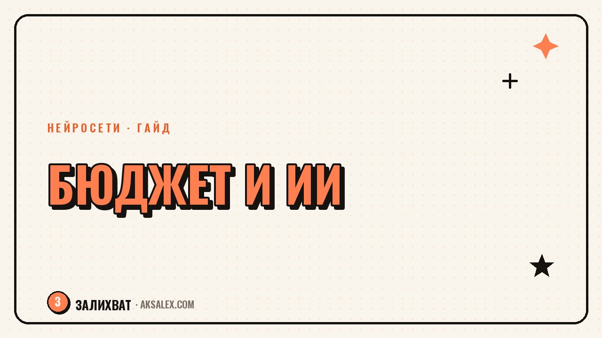

Нейросети для семейного бюджета: учёт и подушка безопасности

Вести бюджет вручную в тетради или в экселе получается у немногих - через месяц-два записи забрасывают, потому что это рутина без обратной связи. Нейросети меняют не сам факт учёта, а то, насколько быстро можно разобраться в собственных тратах: достаточно сфотографировать чек или выгрузить историю из приложения банка, и сервис сам разложит расходы по категориям и покажет, куда утекают деньги.
Зачем подключать нейросеть к бюджету
Главная проблема семейного бюджета не в том, что сложно записать трату, а в том, что сложно увидеть картину целиком, когда расходов за месяц несколько сотен. Ручной учёт быстро превращается в список цифр без смысла - человек видит, что потратил 45 000 рублей, но не понимает, на что именно и можно ли сократить.
Нейросеть берёт на себя рутину классификации: распознаёт текст на фото чека, сопоставляет название магазина с категорией расходов и выводит понятную сводку - сколько ушло на еду, сколько на транспорт, сколько на подписки. Человеку остаётся принимать решения, а не вручную сортировать цифры.
С чего начать учёт расходов
Шаг 1. Выбрать источник данных
Самый простой вариант - приложения банков, которые уже умеют автоматически категоризировать траты по карте. Если часть расходов идёт наличными, помогают приложения для сканирования чеков: фотографируешь чек, текст распознаётся, сумма и категория добавляются в общий учёт автоматически.
Шаг 2. Свести данные в одном месте
Когда трат много и они разбросаны по нескольким картам и наличным, стоит выгружать историю операций в таблицу и просить нейросеть-помощника (например, встроенного в Google Таблицы или в обычном чат-боте) сгруппировать расходы по категориям и показать динамику по месяцам.
Шаг 3. Настроить регулярную сводку
Полезно раз в неделю просить нейросеть не просто показать цифры, а назвать три категории, где траты выросли сильнее всего, и предложить, что можно сократить без ощутимой потери комфорта. Так разбор бюджета превращается в десятиминутный ритуал, а не в большой проект раз в полгода.
Планирование и подушка безопасности
Подушка безопасности - это запас на 3-6 месяцев обязательных расходов, который откладывают отдельно от текущих трат. Нейросеть здесь полезна не тем, что копит деньги вместо тебя, а тем, что помогает честно посчитать, сколько реально нужно откладывать с учётом текущих доходов и обязательных платежей.
- Промпт: «Вот мои ежемесячные обязательные расходы: [список]. Сколько должна составлять подушка безопасности на 4 месяца?»
- Промпт: «Вот мой доход и расходы за три месяца: [данные]. Сколько я реально могу откладывать без ущерба для текущей жизни?»
- Промпт: «Предложи план накопления подушки за 8 месяцев с учётом нерегулярного дохода»
Я три года пыталась копить «по наитию» и срывалась каждый раз, когда случался непредвиденный расход. Когда посчитала с нейросетью реальную сумму подушки и разбила её на понедельный план, откладывать стало психологически легче - видно конкретную цифру, а не абстрактное «нужно накопить», - рассказывает читательница блога.
Важно помнить: нейросеть считает по тем данным, которые ей дали. Если скрыть часть расходов или дать усреднённые цифры за хороший месяц, план получится нереалистичным. Чем честнее исходные данные, тем точнее рекомендация.
Сравнение инструментов для ведения бюджета
| Инструмент | Что умеет | Цена | Для кого подходит |
|---|---|---|---|
| Приложение банка с категоризацией | Авторазбор трат по карте | Бесплатно | Тем, кто платит картой |
| CoinKeeper / Дзен-мани | Учёт по категориям вручную и автоматически | Бесплатно с платной версией | Семьям с разными источниками дохода |
| Google Таблицы + чат-бот | Гибкая сводка и прогноз по своим промптам | Бесплатно | Тем, кто любит разбираться в деталях |
| Сканер чеков (например, в приложении банка) | Распознавание наличных трат по фото | Бесплатно | Тем, кто часто платит наличными |
Частые ошибки при автоматизации бюджета
Первая ошибка - настроить учёт один раз и забыть проверять категории. Автоматическая классификация иногда ошибается: подписку на стриминг может записать как «прочее», а это искажает картину расходов на развлечения. Раз в месяц стоит бегло проверять, правильно ли разложены крупные траты.
Вторая ошибка - вести учёт только для одного члена семьи. Бюджет становится полезным инструментом, когда в него попадают все траты семьи, иначе картина расходов искажена и решения принимаются на основе неполных данных.
Третья ошибка - ждать от нейросети готового решения «как жить». Она хорошо считает и структурирует, но решение сократить конкретную статью расходов или нет всегда остаётся за человеком - у чат-бота нет доступа к тому, что для семьи действительно важно.
Частые вопросы
Безопасно ли загружать данные о тратах в нейросеть?
Стоит избегать передачи номеров карт и других чувствительных данных, достаточно сумм и категорий трат. Для анализа достаточно обезличенной выгрузки без реквизитов.
Можно ли вести семейный бюджет без специальных приложений?
Да, подойдёт обычная таблица и любой чат-бот с нейросетью: ты вносишь данные, а нейросеть помогает их анализировать и предлагает выводы по промптам.
Сколько времени занимает такой учёт бюджета в неделю?
После настройки обычно достаточно 10-15 минут в неделю на проверку категорий и короткую сводку. Основное время уходит на первоначальную настройку источников данных.
Как нейросеть помогает именно с подушкой безопасности, а не только с учётом?
Она берёт реальные данные о доходах и обязательных расходах и считает конкретную целевую сумму и темп накопления, вместо абстрактного совета «откладывай 10%».
Что делать, если доход нерегулярный, например у фрилансера?
Нужно дать нейросети данные за несколько месяцев, включая низкие и высокие, и попросить рассчитать план по среднему минимальному доходу - так подушка и бюджет будут реалистичными даже в слабый месяц.
Раз тема оказалась полезной, вот что почитать следующим. Как составить резюме и сопроводительное письмо с помощью нейросети: конкретные промпты, примеры и разбор типичных ошибок.
Читать статью →а не вручную